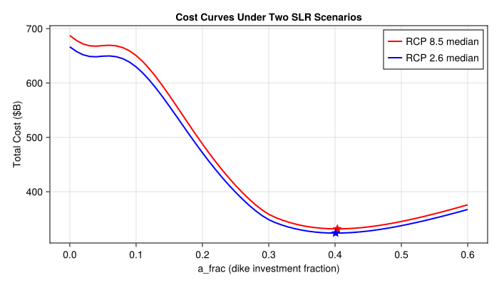

# install SimOptDecisions and ICOW
try
using SimOptDecisions
using ICOW
catch
import Pkg
try
Pkg.rm("SimOptDecisions")
catch
end
try
Pkg.rm("ICOW")
catch
end
Pkg.add(; url="https://github.com/dossgollin-lab/SimOptDecisions")
Pkg.add(; url="https://github.com/dossgollin-lab/ICOW.jl")
Pkg.instantiate()
using SimOptDecisions
using ICOW
end
using ICOW.EADLab 5: Optimal Dike Height
CEVE 421/521
1 Overview
In Lab 4, you ran ICOW to analyze flood risk for a city with a fixed dike. Today you’ll flip the question: how tall should the dike be?
A taller dike costs more to build but reduces expected flood damage. We’ll use optimization to find the height that minimizes total cost, then see how the answer shifts under different sea-level rise assumptions.
References:
- ICOW.jl documentation — the flood risk model
- SimOptDecisions documentation — the optimization framework
2 Before Lab
Complete these steps BEFORE coming to lab:
Accept the GitHub Classroom assignment (link on Canvas)
Clone your repository:
git clone https://github.com/CEVE-421-521/lab-05-S26-yourusername.git cd lab-05-S26-yourusernameOpen the notebook in VS Code or Quarto preview
Run the first code cell — it will automatically install any missing packages (this may take 10-15 minutes the first time)
Submission: You will render this notebook to PDF and submit the PDF to Canvas. See Section 9 for details.
This lab is computationally heavy. The optimization cells can take a minute or more to run. Rather than using Quarto preview (which re-renders every time you save), we recommend running cells one at a time in VS Code using Shift+Enter. Save quarto render for the end when you’re ready to produce your PDF.
3 Setup
3.1 Load Packages
using CairoMakie
using DataFrames
using Metaheuristics
using NetCDF
using Random
using Statistics
include("sea_level_data.jl")
Random.seed!(2026)3.2 Storm Surge Parameters
We model the annual maximum storm surge using a Generalized Extreme Value (GEV) distribution, the same one from Lab 4. The GEV CDF is
\[ F(x) = \exp\left\{-\left[1 + \xi\left(\frac{x - \mu}{\sigma}\right)\right]^{-1/\xi}\right\} \]
where the three parameters control different aspects of the distribution:
- 1
- \(\mu\) (location): centers the distribution — sets the typical annual maximum surge
- 2
- \(\sigma\) (scale): controls the spread — larger means more year-to-year variability
- 3
- \(\xi\) (shape): controls the tail — positive means rare surges can be much larger than the typical one (a “heavy tail”)
4 Set Up the Optimization
In lecture you saw the XLRM framework: eXogenous uncertainties, Levers, Relationships (the model), and Metrics. This lab puts all four pieces together computationally using two packages:
- ICOW is the Relationship model — it computes flood damage given a dike height, surge hazard, and sea-level rise trajectory
- SimOptDecisions is the optimization framework — it searches over Levers to minimize a Metric, given the eXogenous uncertainties
4.1 The Decision: Dike Height
ICOW’s built-in StaticPolicy has five defense levers (withdrawal, dike height, dike base, resistance, flood-proofing), but we only want to vary one. Rather than using all five and trying to hold four constant, we define our own policy type with a single decision variable.
@policydef from SimOptDecisions lets us create custom policy types. Each @continuous field becomes a parameter the optimizer can search over:
SimOptDecisions.@policydef DikeOnlyPolicy begin
1 @continuous a_frac 0.0 0.8
end- 1
-
Declares
a_fracas a continuous decision variable that the optimizer can vary between 0.0 and 0.8
The variable a_frac represents the fraction of city elevation allocated to dike height. With ICOW’s default city geometry, the physical dike height is
\[ D = 0.8 \times \texttt{a\_frac} \times 17\text{ m} \]
so a_frac = 0.3 gives roughly a 4 m dike, and a_frac = 0.8 gives the maximum ~11 m dike.
4.2 Connecting Our Policy to ICOW
ICOW’s simulation expects a full StaticPolicy, so we need a bridge function that converts our simple one-parameter policy into a full one (with the other levers set to their defaults):
function to_static(policy::DikeOnlyPolicy)
return StaticPolicy(;
a_frac=SimOptDecisions.value(policy.a_frac),
w_frac=0.0, # no withdrawal
b_frac=0.2, # reasonable dike base
r_frac=0.0, # no resistance
P=0.0, # no flood-proofing
)
endNext, we teach SimOptDecisions how to simulate our custom policy type. This uses Julia’s multiple dispatch: we add a new method to SimOptDecisions.simulate that accepts our DikeOnlyPolicy, converts it, and forwards to ICOW.
function SimOptDecisions.simulate(
config::EADConfig, scenario::EADScenario, policy::DikeOnlyPolicy, rng::AbstractRNG
)
return SimOptDecisions.simulate(config, scenario, to_static(policy), rng)
end4.3 Scenario: Surge + Sea-Level Rise
An EADScenario bundles everything the decision-maker can’t control: the surge hazard (GEV parameters), a sea-level rise trajectory, and a discount rate. ICOW uses these to compute expected annual damage at each year, then discounts future costs back to present value.
First, load the sea-level rise projections from the BRICK model:
brick_data = load_brick_projections()
rcp85 = get_brick_scenario(brick_data, "rcp85")
rcp85_quantiles = brick_quantiles(rcp85, [0.5])
n_years = 50
slr_rcp85_median = rcp85_quantiles[1:n_years, 1]Now build the scenario. The discount rate \(r\) determines how much we value future damages relative to present costs — a dollar of damage \(t\) years from now has a present value of \(\frac{1}{(1+r)^t}\). At \(r = 0.03\), damage 50 years out is worth only about $0.22 today.
- 1
- 50-year planning horizon with default city geometry
- 2
- GEV parameters for the storm surge distribution (same as Lab 4)
- 3
- SLR trajectory — one value per year from the BRICK median projection
- 4
- 3% annual discount rate for computing net present value
4.4 Objective: Minimize Total Cost
The total cost has two competing components:
\[ \text{Total Cost}(h) = \text{Investment}(h) + \text{NPV}\bigl[\text{Expected Damage}(h)\bigr] \]
where the net present value of expected damage over the planning horizon is
\[ \text{NPV} = \sum_{t=1}^{T} \frac{E[\text{Damage}_t(h)]}{(1+r)^t} \]
Investment increases with dike height \(h\), while expected damage decreases. This is the benefit-cost framework from lecture: we want the dike height where the marginal cost of building higher equals the marginal reduction in expected damage.
The calculate_metrics function receives one outcome per scenario, sums investment + damage for each, and averages across scenarios. With a single scenario the average is trivial, but this matters when we optimize over an ensemble later.
- 1
- For each scenario outcome, sum the two cost components: upfront investment and discounted expected flood damage
- 2
- Average across all scenarios — with one scenario this is just the total cost; with an ensemble it becomes the expected cost
4.5 Sanity Check
Before letting an optimizer loose, it’s good practice to evaluate a few policies by hand. evaluate_policy runs the ICOW model for a given policy and scenario — the same EAD calculation you saw in Lab 4, but now repeated for different dike heights.
let
results = map([0.0, 0.1, 0.2, 0.3, 0.4, 0.5]) do a
policy = DikeOnlyPolicy(; a_frac=a)
fd = FloodDefenses(to_static(policy), config)
metrics = evaluate_policy(
config, [scenario_rcp85], policy, calculate_metrics
)
(
a_frac=a,
dike_height_m=round(fd.D; digits=1),
total_cost_B=round(metrics.total_cost / 1e9; digits=2),
)
end
DataFrame(results)
end6×3 DataFrame
| Row | a_frac | dike_height_m | total_cost_B |
|---|---|---|---|
| Float64 | Float64 | Float64 | |
| 1 | 0.0 | 0.0 | 687.31 |
| 2 | 0.1 | 1.4 | 650.52 |
| 3 | 0.2 | 2.7 | 487.88 |
| 4 | 0.3 | 4.1 | 358.57 |
| 5 | 0.4 | 5.4 | 331.74 |
| 6 | 0.5 | 6.8 | 345.34 |
5 Find the Optimal Dike Height
5.1 How SimOptDecisions.optimize() Works
The sanity check showed a U-shaped cost curve — there’s a minimum somewhere in the middle. Instead of testing every value by hand, we use SimOptDecisions.optimize() to search automatically. Here’s what it does on each iteration:
- Propose a candidate
a_fracvalue - Build a
DikeOnlyPolicyfrom it - Run ICOW via
simulate()for that policy against each scenario - Pass the results to
calculate_metrics(sum investment + damage, average across scenarios) - Use the metric to decide where to search next
We use ECA (Evolutionary Centers Algorithm), a population-based metaheuristic that maintains multiple candidate solutions and iteratively improves them.
5.2 Single-Scenario Optimization
First, configure the optimization backend. A MetaheuristicsBackend wraps an algorithm from Metaheuristics.jl.
backend = MetaheuristicsBackend(;
algorithm=:ECA, # Evolutionary Centers Algorithm
max_iterations=50, # how many rounds of improvement
population_size=20, # candidates evaluated per round
)Now run the optimization. The search bounds come from the @policydef definition (a_frac ∈ [0, 0.8]), so we don’t need to specify them separately.
- 1
-
EADConfig— city geometry and planning horizon - 2
- List of scenarios to evaluate against (just one here)
- 3
- Policy type the optimizer will search over
- 4
- Function that computes the objective from simulation outcomes
- 5
-
Minimize the
total_costmetric returned bycalculate_metrics - 6
- Which optimization algorithm and how hard to search
5.3 Inspect the Result
The result contains pareto_params (best parameters found) and pareto_objectives (corresponding cost).
optimal_a_rcp85 = result_rcp85.pareto_params[1][1] # best a_frac found
optimal_cost_rcp85 = result_rcp85.pareto_objectives[1][1] # corresponding total cost
fd_rcp85 = FloodDefenses(to_static(DikeOnlyPolicy(; a_frac=optimal_a_rcp85)), config)
println("Optimal a_frac: $(round(optimal_a_rcp85; digits=3))")
println("Optimal dike height: $(round(fd_rcp85.D; digits=2)) m")
println("Minimum total cost: \$$(round(optimal_cost_rcp85 / 1e9; digits=2))B")Optimal a_frac: 0.404
Optimal dike height: 5.49 m
Minimum total cost: $331.72B5.4 A Different Scenario
That result assumed RCP 8.5 (high emissions). Let’s re-optimize under RCP 2.6 (aggressive emissions cuts) and see how much the answer changes.
rcp26 = get_brick_scenario(brick_data, "rcp26")
rcp26_quantiles = brick_quantiles(rcp26, [0.5])
slr_rcp26_median = rcp26_quantiles[1:n_years, 1]
scenario_rcp26 = EADScenario(;
surge_loc=μ,
surge_scale=σ,
surge_shape=ξ,
mean_sea_level=slr_rcp26_median,
discount_rate=0.03,
)Same optimize() call, just with a different scenario:
result_rcp26 = SimOptDecisions.optimize(
config,
[scenario_rcp26],
DikeOnlyPolicy,
calculate_metrics,
[minimize(:total_cost)];
backend=backend,
)5.5 Compare
let
optimal_a_rcp26 = result_rcp26.pareto_params[1][1]
optimal_cost_rcp26 = result_rcp26.pareto_objectives[1][1]
fd_rcp26 = FloodDefenses(
to_static(DikeOnlyPolicy(; a_frac=optimal_a_rcp26)), config
)
DataFrame(
Scenario=["RCP 8.5 (median SLR)", "RCP 2.6 (median SLR)"],
Optimal_a_frac=[round(optimal_a_rcp85; digits=3), round(optimal_a_rcp26; digits=3)],
Dike_Height_m=[round(fd_rcp85.D; digits=2), round(fd_rcp26.D; digits=2)],
Total_Cost_B=[
"\$$(round(optimal_cost_rcp85 / 1e9; digits=2))B",
"\$$(round(optimal_cost_rcp26 / 1e9; digits=2))B",
],
)
end2×4 DataFrame
| Row | Scenario | Optimal_a_frac | Dike_Height_m | Total_Cost_B |
|---|---|---|---|---|
| String | Float64 | Float64 | String | |
| 1 | RCP 8.5 (median SLR) | 0.404 | 5.49 | $331.72B |
| 2 | RCP 2.6 (median SLR) | 0.401 | 5.45 | $323.99B |
5.6 Visualize the Cost Curves
let
a_values = 0.0:0.01:0.6
costs_rcp85 = map(a_values) do a
metrics = evaluate_policy(config, [scenario_rcp85], DikeOnlyPolicy(; a_frac=a), calculate_metrics)
metrics.total_cost / 1e9
end
costs_rcp26 = map(a_values) do a
metrics = evaluate_policy(config, [scenario_rcp26], DikeOnlyPolicy(; a_frac=a), calculate_metrics)
metrics.total_cost / 1e9
end
fig = Figure(; size=(700, 400))
ax = Axis(
fig[1, 1];
xlabel="a_frac (dike investment fraction)",
ylabel="Total Cost (\$B)",
title="Cost Curves Under Two SLR Scenarios",
)
lines!(ax, collect(a_values), costs_rcp85; color=:red, linewidth=2, label="RCP 8.5 median")
lines!(ax, collect(a_values), costs_rcp26; color=:blue, linewidth=2, label="RCP 2.6 median")
scatter!(
ax,
[optimal_a_rcp85],
[optimal_cost_rcp85 / 1e9];
color=:red,
markersize=15,
marker=:star5,
)
optimal_a_rcp26 = result_rcp26.pareto_params[1][1]
optimal_cost_rcp26 = result_rcp26.pareto_objectives[1][1]
scatter!(
ax,
[optimal_a_rcp26],
[optimal_cost_rcp26 / 1e9];
color=:blue,
markersize=15,
marker=:star5,
)
axislegend(ax; position=:rt)
fig
end
6 Optimize Over an Ensemble
The two median scenarios gave similar answers — but medians compress the full range of uncertainty into a single number. BRICK actually gives us many plausible SLR trajectories, some much more extreme than the median. What if we optimize over an ensemble of them at once?
Mathematically, we’re solving
\[ \min_{h} \; \frac{1}{N} \sum_{i=1}^{N} \text{Total Cost}_i(h) \]
where \(i\) indexes ensemble members. Each member has the same surge distribution but a different SLR trajectory, so this finds the dike height that minimizes expected total cost across the ensemble — implicitly treating each member as equally likely.
6.1 Build the Ensemble
Each column of get_brick_scenario() is one ensemble member’s SLR trajectory. We build a vector of EADScenario objects — one per member. The surge parameters stay the same; what varies is the SLR path.
- 1
- Start small so the optimization runs quickly. Try increasing to 30 or 50 and see how the result changes!
- 2
- Column \(i\) of the BRICK output gives ensemble member \(i\)’s sea-level rise trajectory
Try it: After you’ve run the ensemble optimization once with N_ensemble = 3, come back and increase it (e.g., to 10, 30, or 50) to see how the optimal dike height shifts as you include more SLR futures. More members means a better sample of the uncertainty — but each optimization evaluation takes proportionally longer. How would you decide when N_ensemble is “large enough”? (Hint: what should happen to the optimal dike height as you keep adding members?)
6.2 Optimize
Same optimize() call as before, but now we pass all N_ensemble scenarios. Each function evaluation runs ICOW N_ensemble times (once per scenario), so each iteration is more expensive. We compensate by using a smaller population — with only one decision variable, a large population wastes effort exploring a 1D space. More iterations are cheap relative to more candidates per iteration, and they give the optimizer time to converge.
- 1
-
Many iterations to ensure convergence — each iteration is cheap (only
population_sizeevaluations) - 2
- Small population because we only have one decision variable — no need to explore a high-dimensional space
- 1
-
All
N_ensemblescenarios are passed — the optimizer evaluates every candidate dike height against all of them - 2
-
calculate_metricsaverages total cost across all outcomes, so the optimizer minimizes the mean cost
6.3 Inspect the Result
optimal_a_ensemble = result_ensemble.pareto_params[1][1]
optimal_cost_ensemble = result_ensemble.pareto_objectives[1][1]
fd_ensemble = FloodDefenses(to_static(DikeOnlyPolicy(; a_frac=optimal_a_ensemble)), config)
println("Ensemble-optimal a_frac: $(round(optimal_a_ensemble; digits=3))")
println("Ensemble-optimal dike height: $(round(fd_ensemble.D; digits=2)) m")
println("Minimum expected total cost: \$$(round(optimal_cost_ensemble / 1e9; digits=2))B")Ensemble-optimal a_frac: 0.403
Ensemble-optimal dike height: 5.49 m
Minimum expected total cost: $332.02B6.4 Compare All Results
let
optimal_a_rcp26 = result_rcp26.pareto_params[1][1]
optimal_cost_rcp26 = result_rcp26.pareto_objectives[1][1]
fd_rcp26 = FloodDefenses(
to_static(DikeOnlyPolicy(; a_frac=optimal_a_rcp26)), config
)
DataFrame(
Scenario=[
"RCP 8.5 (median only)",
"RCP 2.6 (median only)",
"RCP 8.5 ($(N_ensemble)-member ensemble)",
],
Optimal_a_frac=[
round(optimal_a_rcp85; digits=3),
round(optimal_a_rcp26; digits=3),
round(optimal_a_ensemble; digits=3),
],
Dike_Height_m=[
round(fd_rcp85.D; digits=2),
round(fd_rcp26.D; digits=2),
round(fd_ensemble.D; digits=2),
],
Total_Cost_B=[
"\$$(round(optimal_cost_rcp85 / 1e9; digits=2))B",
"\$$(round(optimal_cost_rcp26 / 1e9; digits=2))B",
"\$$(round(optimal_cost_ensemble / 1e9; digits=2))B",
],
)
end3×4 DataFrame
| Row | Scenario | Optimal_a_frac | Dike_Height_m | Total_Cost_B |
|---|---|---|---|---|
| String | Float64 | Float64 | String | |
| 1 | RCP 8.5 (median only) | 0.404 | 5.49 | $331.72B |
| 2 | RCP 2.6 (median only) | 0.401 | 5.45 | $323.99B |
| 3 | RCP 8.5 (3-member ensemble) | 0.403 | 5.49 | $332.02B |
7 Reflection
Extensions (Optional)
If you finish early, try one of these:
- Uncertain discount rate: Re-optimize with discount rates of 0.01, 0.03, and 0.07. Which parameter — SLR or discount rate — has more influence on the optimal dike height?
- Multi-objective: Minimize investment and expected damage separately using
[minimize(:investment), minimize(:expected_damage)]. What does the Pareto front look like?
8 Summary
Key takeaways:
- Optimization balances investment against expected damage — finding the dike height where marginal cost equals marginal benefit
- The answer depends on framing — time horizon, discount rate, and scenario choice all shape the “optimal”
- Ensemble optimization hedges across futures — but the result depends on which futures you include and how you weight them
- Always verify your optimizer — metaheuristics can fail to converge, especially with expensive evaluations
9 Submission
Write your answers in the response boxes above
Render to PDF:
- In VS Code: Open the command palette (
Cmd+Shift+P/Ctrl+Shift+P) → “Quarto: Render Document” → select Typst PDF - Or from the terminal:
quarto render index.qmd --to typst
- In VS Code: Open the command palette (
Submit the PDF to the Lab 5 assignment on Canvas
Push your code to GitHub (for backup):
git add -A && git commit -m "Lab 5 complete" && git push
Checklist
Before submitting: